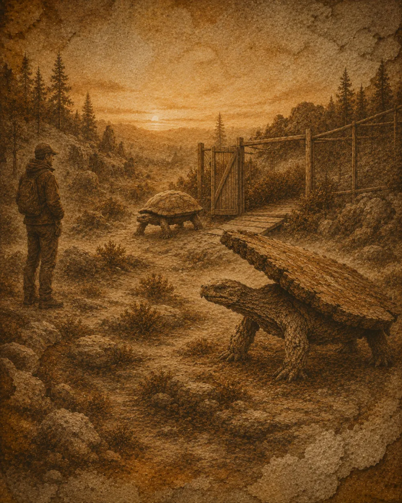

Coexist, don’t capture
Conservation
The living table is neither a lost piece of furniture nor an object to be restored. It is a species in its own right, sensitive to vibration, chemical scents and confinement.

Rules of observation
- Stay more than eight tablecloth-lengths away.
- Never set a plate on a wild individual.
- Avoid varnish, solvents and scented products.
- Photograph without flash, at dusk.
Protected areas
Reserves for living tables must preserve stony ground, dead wood, clearings and light ruins. A colony thrives when humans agree not to tidy the landscape.
If you meet one
Step back slowly. Speak softly. If the table tilts its top, it is weighing your moral steadiness. Do not try to help it “stand up straight”: this is often a listening posture.
Rewilding
Some domesticated individuals can return to a free life. They are first placed in transition enclosures with dust, wind and false meals. The first steps are always moving.